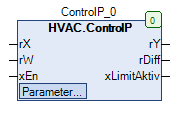

ControlP (FB)¶
FUNCTION_BLOCK ControlP
Short Description¶
Proportional controller (P-controller)The direction of action (inverted/direct) is also adjustable.Typical application: Controlled systems with actuators where storage is possible.
Portrayal¶

Interfaces¶
Inputs¶
Name Datatyp
Range
Initial value
Function
rX REAL Analog actual value
rW REAL Analog setpoint value
xEn BOOL Enable the Controller
Output¶
Name Datatyp
Range
Initial value
Function
rY REAL 0.0 Output signal of the controller
rDiff REAL Control deviation
xLimitActive BOOL Status - Exceeding the limit value
Setpoints / Parameter¶
Name Datatyp
Range
Initial value
Function
rMax REAL 100.0 Upper absolute limit value of the output signal
rMin REAL -100.0 Lower absolute limit value of the output signal
rKp REAL 0.0 ... 2.0 Gain factor
rOffset REAL 0.0 Offset
rYDisabled REAL 0.0 Switch-off value
eAction eControlMode eControlMode.Inverted Direction of action of the controller (inverted, direct)
eManModeN eManNum eManNum.Auto Operating mode for the controller output signal
rManValue REAL Output signal in manual mode
Functional Description¶
General¶
eAction Actual value
Setpoint value
Formula
Function
eControlMode.Inverted
rW rX rY = rKp * (( rW + rOffset ) - ( rX )) Direction of action - Inverted
eControlMode.Direct rX rW rY = rKp * (( rX + rOffset ) - ( rW )) Direction of action - direct
Enable input xEn¶
Control deviation rDiff¶
Absolute limit values rMin and rMax¶
Status - limit exceeded xLimitActive¶
Operating mode for the output signal of the Controller eManModeN¶
eManModeN rY Function
eManNum.Auto Signal according to the formula / switch-off value
Automatic operation - Output signal
eManNum.Man rManValue Manual operation - Output signal
Visualization¶
Codesys¶
- InOut:
Scope Name Type Initial Comment Input rX REAL Analog actual value
rW REAL Analog setpoint value
xEn BOOL Enable the Controller
rYMax REAL 100 Upper absolute limit value of the output signal
rYMin REAL -100 Lower absolute limit value of the output signal
rKp REAL 2 Gain factor
rOffset REAL 0 Offset
rYDisabled REAL 0 Switch-off value
eAction eControlMode eControlMode.Inverted Direction of action of the controller (inverted, direct)
eManModeN eManNum eManNum.Auto Operating mode for the controller output signal
rManValue REAL Output signal in manual mode
Output rY REAL 0 Output signal of the controller
rDiff REAL Control deviation_Xw ( rX - rW )
xLimitAktiv BOOL Status - Exceeding the limit value